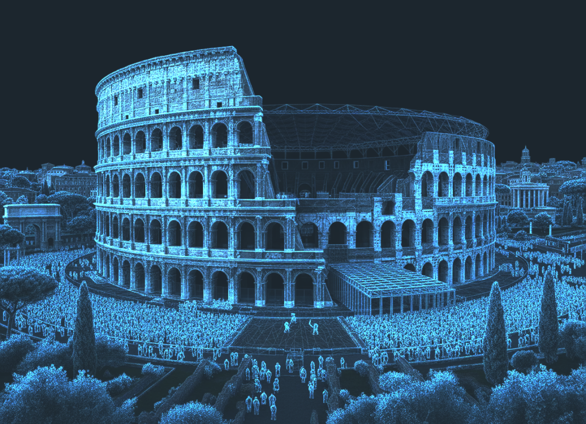

APPCHAIN 574014
STAKING CAMPAIGN
Stake $SYND to Stadium to build our digital arena
I. FOUNDATION
LAY STRUCTURAL SUPPORTS, UTILITIES, AND ACCESS TUNNELS
0 / 250K SYND
NEXT STEP [2/4]
II. LOWER BOWL
Unlock at 250K SYND

Analytics Dashboard
visualizer
dashboard
VIEW VISUALIZER
00:00:00
stadium_terminal
public tracker for stadium chain
SYS STATUS
staking operational
epoch 1 - OCT 30 - NOV 29
INITIALIZING DATA STREAMS
SYSTEM ERROR:
Total Staked
?
0
SYND locked in network
Goal: --
STAKE $SYND
Network Metrics
Active Nodes
?
0
—
Avg Per Node
?
0
—
Network Share
?
0%
—
Rank
?
#-
—
Emission / Epoch
?
0
Epoch -- · Appchain pool
Emission / Day
?
0
Based on 30-day epoch
Node Status
Network Position
Current Rank
#- of -
Total Network
0 SYND
Last Updated
--:--:--
Primary Nodes
Weekly Snapshots
Top 10 captured every Friday
Analytics
Metric Title
Close
SYND Token
$0.00
—
Native token of the Syndicate Network, used for staking and governance.
SYND Token
$0.00
—
Native token of the Syndicate Network, used for staking and governance. SYND powers the network's validator rewards and appchain emissions.
Node Details
CLOSE
Metric Details
CLOSE